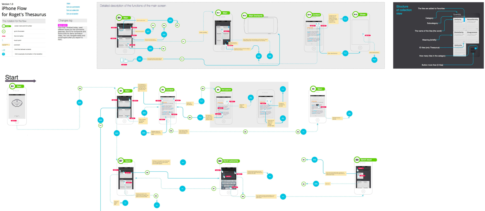

Boxes and Lines, Greyscale, No images or branding.
Internal stakeholders, tech savvy, clients
Purpose is to validate functionality, user flows and information architecture
Best for quick ideation. Dont get attached. Fail Fast and Cheap.
Cannot convey interactivity or dynamic behaviors.
They can confuse humans that are unfamiliar with the concept. They often do not understand why it is ugly or incomplete looking.
High Fidelity Wireframes
Look and feel like a finished product.
Interactive and more advanced. Showcase interactions, real data, gestures and transactions.
Used for use testing, sell product or ideas to investors or stakeholders, test product feasibility and validity, and align branding.
Time consuming to create, This is not a deliverable for developers, but rather stakeholders who are interested in interacting with the design. This should be the final state after completing low fidelity designs. Designers are much less willing to switch gears, or throw away high fidelity wireframes if they are not working because of the investment of time, and the visual design.
DO
User research. You will not create a good product or solution if you do not understand who your users are, their goals and their pain points.
User clear language. (No Jargon)
If you have real content, use it.
Collaborate early with others / get feedback.
Dont reinvent the wheel. There are patterns a user is alreaduy familiar with, and just expects. (Location of primary navigation, success messages after a transaction etc.)
Use color, images or any visuals that relate to brand or style.
Rely on icons (Accessiblity rules require words in addition to icons if you are going to use them. If you are going to use them, ensure that they are universal.
Get attached. Your solution should not be your opinion. You should be able to defend how you got to this solution using validated user research.
Forget Mobile. It is an expectation, not a nice to have.
Forget to test with REAL USERS
Responsive Design Terminology
Viewports are the visible screen area.
Breakpoints are the point at which your site content will respond / change layouts to provid the user with the best possible layout to consume the information
Media queries are the CSS properties that are applied only if a certain condition is true. They define where the breakpoints occur based on the width of the screen for the device you are using. This includes landscape and portait orientations.
Setting up a grid in Sketch
Responsive Grid System
Common layout best practices are based on a 4 (mobile), 8(tablet) and 12 column (desktop) grids.
TinyTweaks - typically a single column layout with small tweaks to margins, padding, and content.
Column Drops - Multiple columns drop under one another when the breakpoint is reached.
Layout Shifter - Each breakpoint is considered a separate design.
Off Canvas - hides secondary content from main viewport. Can be accessed with a “trigger” that will shift data in and out of the viewport (button, link etc.).

Examples of Good Responsive / Navigation eCommerce Sites
Part 1: Low Fidelity Wireframes for an eCommerce Website
You have been hired to design an eCommerce website. You can select whatever type of online store that you want (you can sell whatever products you want to sell. I’d select keeping it simple and select a single “type of product” vs multiple types of products.)
As a user, I want to be able to search or browse for product(s) I can purchase. I want to be able to narrow down results match common criteria (for the type of eCommerce site you have chosen). I want to be able to complete a purchase and have the items I have ordered shipped to me.
Consider doing a journey map for how a human may want to use your site. What factors are important? What will make their experience pleasant while ensuring that the business objectives are being met?
Due February 21st 2020 at 12:00pm
Evaluation Critiera
Value
Outcomes
20
Grids and Layouts for Desktop, Tablet and Mobile views
A grid should be visible as a layer in each frame, and your layout should align to a responsive design column structure for desktop, tablet and mobile.
The responsive behavior / layout between viewport sizes is visually clear.
The responsive behavior / layout between viewport sizes is textually documented.
10
Annotations should be clear and detailed about what happens for every element you can interact with on the wireframe
10
Your products should be organized logically, and findable for users who may want to search or browse.
10
The flow for your user to complete the required tasks follows UX patterns, and best practices.
Search for a product
Browse for a product
Narrow down products based on relevant criteria
Purchase one or multiple products, and have them shipped
Another other tasks / information that might be important to support users